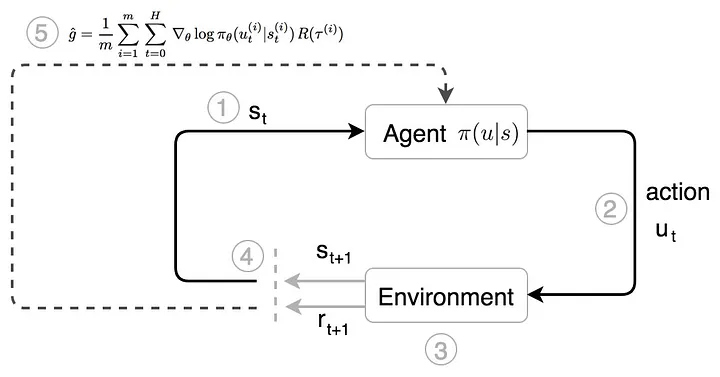
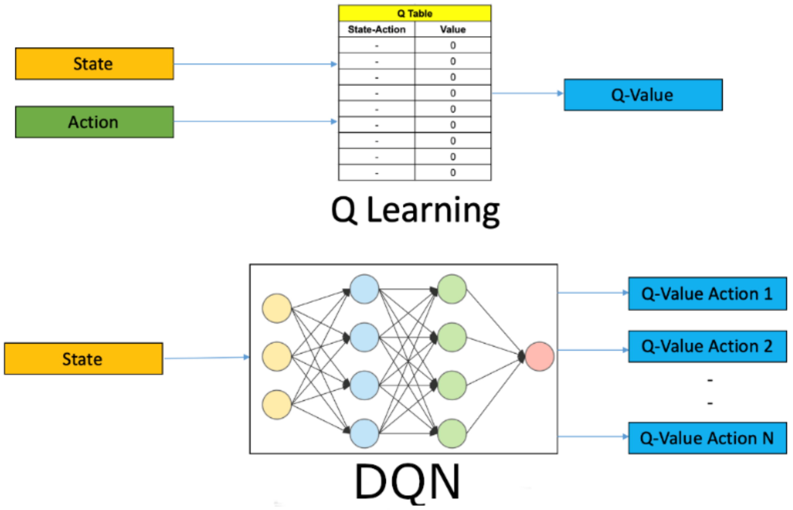
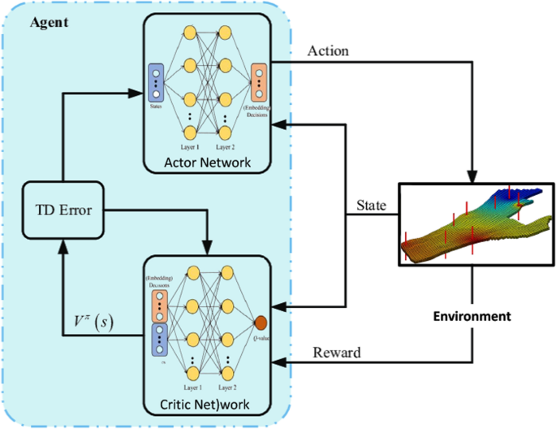
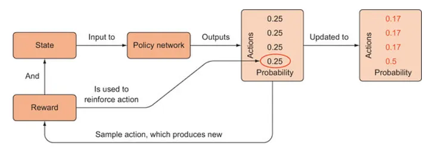
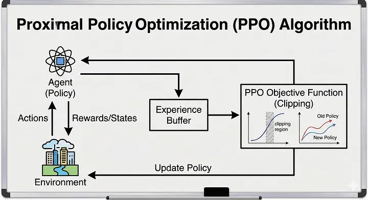
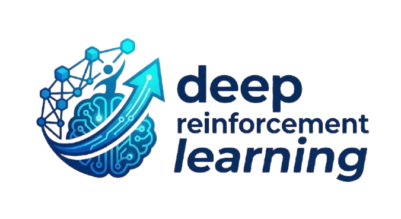

Policy-Based Methods
Policy Gradient
A Policy Network is a neural network that directly learns a policy, i.e., a mapping from states to actions. Instead of estimating the value of actions like DQN, it outputs the action (or the probability of each action) that the agent should take in a given state.
Key Idea
The network represents the policy:
π(a∣s)\pi(a\mid s)π(a∣s)
where:
- s = current state
- a = action
- π(a|s) = probability of choosing action a in state s
the total future reward from time step t : Gt=rt+γrt+1+γ2rt+2+γ3rt+3+⋯
If Gt : is large, it means:
- the action taken at time t led to good future rewards.
- So the agent should:
- reinforce this behavior increase probability of taking similar actions again.
Discount Factor
how much the agent cares about future rewards. A reward received:
-
now → more important
-
later → less important because future rewards are uncertain.
-
If γ=0 : Agent only cares about immediate reward.
-
If γ≈1 : Agent cares about long-term rewards.
Future rewards are usually less important than immediate rewards. So we discount them.
REINFORCE (Basic Policy Gradient)
Squelette de l’Actor-Critic
Actor-Critic is a reinforcement learning architecture that combines policy-based and value-based methods. It consists of two neural networks:
- Actor: chooses the action to perform.
- Critic: evaluates how good the chosen action is.
State
│
▼
Actor ──► Action
▲
│
Critic ◄── Reward + Next State
Instead of learning:
the value of actions (like Q-learning),Policy Gradient methods directly learn the policy itself.

Value-Based Methods
A Deep Q-Network (DQN) is a value-based Deep Reinforcement Learning algorithm that uses a neural network to approximate the Q-function, which estimates the expected cumulative reward of taking a specific action in a given state.
Instead of storing Q-values in a table (which becomes impractical for large state spaces), DQN uses a deep neural network to predict: Q(s,a)
where:
- s = current state
- a = action
- Q(s,a) = expected future reward after taking action a in state s


The Critic computes the TD Error, which measures the difference between the predicted value and the observed value:
δ=r+γV(s′)−V(s)
where:
- r = reward received
- γ = discount factor
- V(s) = current state’s value
- V(s’) = next state’s value
- δ = TD Error
δ > 0 : Result was better than expected. Increase probability of action. δ < 0 : Action was worse than expected. Decrease probability.
Advanced Policy Optimization

REINFORCE is the simplest Policy Gradient algorithm. It learns a policy directly by increasing the probability of actions that lead to high rewards and decreasing the probability of actions that lead to low rewards.
Main Idea
The agent:
- Interacts with the environment.
- Completes an entire episode.
- Calculates the total reward obtained.
- Updates the policy so that successful actions become more likely in the future.
The policy is represented by a neural network: πθ(a∣s)\pi_{\theta}(a\mid s)πθ(a∣s)
Policy Learning
Policy Network
DQN (Deep Q-Network)
PPO

PPO (Proximal Policy Optimization) is an advanced Actor-Critic reinforcement learning algorithm developed by OpenAI. It improves training stability by preventing the policy from changing too much during each update.
Main Idea
In standard Policy Gradient methods, large updates can make learning unstable. PPO solves this problem by limiting how much the policy can change after each training step.
State
│
▼
Actor ──► Action
▲
│
Critic ◄── Reward + Next State
Like Actor-Critic:
- The Actor learns the policy.
- The Critic evaluates the quality of actions.
How PPO Works
- The agent interacts with the environment.
- The Actor chooses actions.
- The Critic evaluates the results.
- PPO updates the policy while ensuring the new policy remains close to the old one.
- Training becomes more stable and reliable.
PPO Objective
PPO uses a clipped objective function:
LCLIP(θ)=E[min(rt(θ)At,clip(rt(θ),1−ϵ,1+ϵ)At)]
The clipping mechanism prevents excessively large policy updates.
